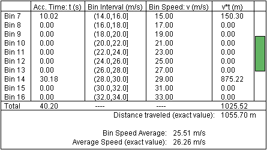
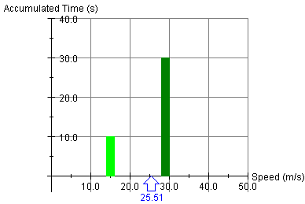

Prerequisites
Students should be familiar with the definition of average speed as the ratio of distance traveled over time elapsed.
Learning Outcomes
Students will be able to use the concept of time-weighted average of speed to calculate the average speed.
Instructions
Students should know how the applet functions, as described in Help and ShowMe.
The applet should be open. The step-by-step instructions in the following text are to be done in the applet. You may need to toggle back and forth between instructions and applet if your screen space is limited.
 Average Speed as a
Time-Weighted Average
Average Speed as a
Time-Weighted Average

Question 1. A car goes around an oval track at a speed of 20 m/s. Upon completing the first round, the car increases its speed very quickly (let's assume instantaneously to make the calculation easier) to 40 m/s and then goes around the track the second time at 40 m/s.
What is the car's average speed over the two rounds?
Answer. It may be tempting to say 30 m/s. After all, the mean of 20 and 40 is 30. However, that would not be the right answer because average speed is not defined as an arithmetic mean of speeds.
Definition of Average Speed
average speed = (distance traveled) / (time elapsed)
Before doing the calculation based on this definition, use the applet to determine the average speed "experimentally".
Exercise 1. Simulate the car's motion with the applet by setting the speed to 20 m/s, letting the car complete one round, pausing the motion, resetting the speed to 40 m/s, and letting the car complete the second round and pausing the motion again. You may not be able to pause the motion exactly after the car has completed a round, which will introduce a slight error.
Display the car's speed vs. time graph during the motion by checking the Speed vs. Time checkbox. Observe that the average speed changes continually during the second round, but that at no time during that round it is equal to 30 m/s. The average speed is always less than 30 m/s, and you should find that upon completion of the second round it is around 26.7 m/s.
Exercise 2. Copy the graph of speed vs. time for the two rounds into your Notebook. Evaluate the area under the graph for the first round. The area is equal to height×base of the rectangle, i.e., equal to speed×(time elapsed). This is the distance traveled by the car in the first round, i.e., the distance around the oval track (approximately, since you may not have paused the motion after exactly one round).
Repeat this calculation for the second round. You should find that the rectangle is twice as high, but only half as wide, resulting in the same distance traveled (approximately).
Observe where the applet has drawn the average speed. Enter this horizontal line into your graph and verify that the area under the average speed graph is equal to the distance traveled by the car when going around the oval twice. Thus, the average speed line is drawn at a level such that the definition above of average speed is satisfied.
Exercise 3. Calculate the average speed for the two rounds assuming a speed of 20 m/s was maintained for exactly one round and a speed of 40 m/s for the second round. The distance s around the oval is not given because it is not needed. Work with the symbol s for this distance in your calculation. (If you find this difficult, use s = 500 m. The value of the average speed should not depend on what value for s you assume.)
Solution. We need the total distance traveled and the total time elapsed. The total distance traveled is 2s. The time elapsed during the first round is s/(20 m/s). The time elapsed during the second round is s/(40 m/s). Thus, the total time T elapsed is
 T = s[1/20 + 1/40] =
s×60/800 = s×3/40.
T = s[1/20 + 1/40] =
s×60/800 = s×3/40.  (1)
(1)
This gives for the average speed
 vav = 2s / [3s/40] = 80
/ 3 = 26.7 m/s.
vav = 2s / [3s/40] = 80
/ 3 = 26.7 m/s.  (2)
(2)
Exercise 4. Repeat Exercise 1 with two new speed settings for the car, making sure the car travels the same distances for speed 1 and speed 2. Calculate the value of the average speed as in Exercise 3, and compare the result with that shown by the applet.

In the previous section, you calculated the average speed for a motion where two different speeds were maintained over equal distances. What if the distances are not equal? A more general expression for the average speed will now be derived that applies in all cases where a motion is performed at two different speeds.
Let the two speeds be denoted by v1 and v2, the distances traveled at these speeds by s1 and s2, and the times elapsed while these speeds are maintained by t1 and t2, respectively. The total distance traveled is s1 + s2 and the total time T elapsed is t1 + t2. With that, the definition of average speed gives
 vav = (s1 +
s2) / T
vav = (s1 +
s2) / T
 =
s1/T + s2/T
=
s1/T + s2/T
 =
(v1t1) / T +
(v2t2) / T
=
(v1t1) / T +
(v2t2) / T
 =
(t1/T) v1 +
(t2/T)
v2.
=
(t1/T) v1 +
(t2/T)
v2. (3)
(3)
In Expression (3) for the average speed, each speed is multiplied by a factor equal to the fraction of the total time during which the speed is maintained. This factor is a called a weighting factor and this kind of an average is called a time-weighted average.
Equ.(3) requires the times and speeds to be known. If instead of the times the distances are known, substitute for the times the expressions
 t1 =
s1/v1
t1 =
s1/v1 and
and t2 =
s2/v2.
t2 =
s2/v2. (4)
(4)
Question 1. Is it ever true that the average speed over a motion that consists of two different speeds v1 and v2 is equal to the arithmetic mean (v1 + v2) / 2?
Answer. Yes, when the factors (t1/T) and (t2/T) in Equ.(3) are equal to 1/2.
This is the case when the times t1 and t2 elapsed during which the two speeds are maintained are equal. This is not the case when the two speeds are maintained over equal distances, as in Question 1 of the preceding section. The times taken to cover the same distance will be different when the car is moving at different speeds.
Exercise 1. Use Equ.(3) to calculate the average speed for the situation dealt with in Question 1 of the preceding section. A car went around an oval track at a speed of 20 m/s and then a second time at 40 m/s. Calculate the car's average speed for the two rounds using Equ.(3). Try it yourself before looking at the following answer.
Answer. Since the car goes twice as fast the second time around, its travel time for the second round is half that for the first round. Therefore,
 t1/T = 2/3
t1/T = 2/3 and
and t2/T = 1/3.
t2/T = 1/3. (5)
(5)
Substituting the factors (5) into Equ.(3) gives
 vav = (2/3)×20 + (1/3)×40
= 26.7 m/s.
vav = (2/3)×20 + (1/3)×40
= 26.7 m/s. (6)
(6)
This is the result obtained in Equ.(2) of Exercise 3 of the preceding section.
Exercise 2. Reset the applet. Set the car's speed to 15.0 m/s. Keep the number of bins at 25. Make sure both the Speed vs. Time graph and the Accumulated Time vs. Speed graph are not displayed. Do display the Data box, and scroll its display so that Bins 7 and 14 are simultaneously on display. These bins contain the speeds 15 m/s and 30 m/s.
Play the car's motion, and Pause it when the Accumulated Time in Bin 7 is 10.0 s or close to it. Then set the car's speed to 30.0 m/s. Play the car's motion, and Pause it when the Accumulated Time in Bin 14 is 30.0 s or close to it.
Use Equ.(3) to calculate the average speed for the actual times elapsed in your experiment, which will be close to 10 s and 30 s for the two speeds. Compare your result to the "Average Speed (exact value)" at the bottom of the Data box.
Sample calculation. Figure 1 below shows values similar to those that you might obtain.

Figure 1
With t1 = 10.02 s, t2 = 30.18 s, and the total time T elapsed equal to 10.02 + 30.18 = 40.20 s, Equ.(3) gives
 vav = (10.02/40.2)×15 +
(30.18/40.2)×30 = 26.26 m/s.
vav = (10.02/40.2)×15 +
(30.18/40.2)×30 = 26.26 m/s. (7)
(7)
This is the value shown at the bottom of the Data box in Figure 1.
Important Comment. In addition to the exact value (7) of the average speed the applet also calculates a bin speed average, which in this case comes out to 25.51 m/s. This value is obtained as follows.
The applet divides the available speed range from 0 to 50 m/s into bins of equal size. At present, with the number of bins equal to 25, each bin has a width of 50/25 = 2 m/s. The bins are numbered 0 to 24. Bin 7 covers the interval (14.0,16.0] m/s. This interval is open at the left and therefore does not include 14.0 m/s, but is closed on the right and does include 16.0 m/s.
The bin speed, the speed at the midpoint of a bin, is representative for all speeds in that bin. Bin 7 has 15 m/s at its midpoint, so 15 m/s is the bin speed. Bin 14 covers the interval (28.0,30.0] m/s and has the bin speed 29.0 m/s. The bin speed average is the time-weighted average bin speed calculated according to Equ.(3). In the present case, the bin speed average is
 vbin,av = (10.02/40.2)×15 +
(30.18/40.2)×29 = 25.51 m/s.
vbin,av = (10.02/40.2)×15 +
(30.18/40.2)×29 = 25.51 m/s. (8)
(8)
Exercise 3. Continuing from Exercise 2, hide the Data box and display the Accumulated Time vs. Speed graph instead. The graph representing the data from Figure 1 is shown in Figure 2 below.

Figure 2
The bin speed of 15.0 m/s is shown with an accumulated time indistinguishable from 10 s and the bin speed of 29.0 m/s with an accumulated time indistinguishable from 30 s. The bin speed average of 25.51 m/s is displayed below the speed axis.
Lesson. The two columns in Figure 2 are proportional to the time weightings given to the two bin speeds in Calculation (8). The bin speed average is a kind of "center of weight" for the two bin speeds that are contributing to the average. Note that the bin speed average is quite a bit closer to the bin speed with the larger time weighting. It is not in the middle between the two speeds.
The same kinds of comments apply to Calculation (7) of the average speed or to the general Expression (3) for the average speed.
Why Bins and Bin Speeds?
We need to sort speeds into finite-sized bins in order to be able to define a time-weighted average of speed for continuously variable speed. If only discrete speeds are involved in a situation, as in the examples dealt with here, we can work with only these speeds and do not need bins. However, if the speed is varying continuously, i.e., not jumping by discrete amounts, sums like those in Equ.(3) need to be replaced by an integral. An integral is the limit of a calculation that uses bins and where one lets the bin size approach zero.
Finite bins introduce an error. In Examples 2 and 3, the actual speed of 30.0 m/s is replaced by the bin speed of 29.0 m/s. However, making the bins smaller will tend to make this kind of error smaller as well. The error vanishes in the limit of zero bin size.
Exercise 4. Reset the applet. Display the Data box, and hide all graphs. Increase the number of bins to 50, and record the bin speeds for the bins containing the two speeds from Exercise 2, i.e., the speeds of 15.0 m/s and 30.0 m/s.
You should find that 30 m/s is now contained in Bin 29, covering the interval (29.1,30.2] m/s, and that the bin speed of 29.65 m/s is much closer to 30 m/s than the 29.0 m/s when only 25 bins are used. Unfortunately, the gain in accuracy at 30 m/s is somewhat offset by a loss in accuracy at 15 m/s. With 25 bins, the bin speed of 15.0 m/s is identical to the actual speed. With 50 bins, Bin 12, covering the interval (14.1,15.2] m/s, has a bin speed of 14.53 m/s instead of 15.0 m/s.
Repeat the experiment from Exercise 2 with a 50-bin setting, calculate your bin speed average and compare it to that shown by the applet. You should find that, in spite of the loss of accuracy at 15 m/s due to binning, the bin speed average is a bit closer to the exact average speed because of the time-weightings involved.
In any case, decreasing the bin size by a lot (the applet is not able to do that) is bound to decrease the error in binning because the bin speeds will necessarily be very close to the actual speeds. In the limit of vanishing bin size, the bin speed average will become identical with the exact average speed. For continuously varying speed, the only way of defining a time-weighted average is as a limit of bin speed averages. The following Exercise illustrates the use of bins when the speed is being varied continuously.
Exercise 5. Reset the applet. Display both graphs, Speed vs. Time and Accumulated Time vs. Speed. Drag the graphs so that they don't overlap, but are fully contained within the window. Set the number of bins to 5. Play the motion, and vary the car's speed continually during the motion.
Describe your observations. The exact value of the average speed is displayed with the Speed vs. Time graph and the bin speed average with the Accumulated Time vs. Speed graph.
Repeat this with 50 bins.
Note that it is possible when using wide bins to get a bin speed average that is quite close to the exact average speed. How does one have to choose the speeds to achieve that? However, it is also possible to get a bin speed average that is quite a bit different from the exact average speed. For narrow bins, the bin speed average always is close to the exact value of the average speed.
Exercise 6. Suppose a motion involves three different speeds. Write down an expression for the average speed as time-weighted average of the three speeds analogous to Expression (3) for the time-weighted average of two speeds. Then give a derivation of your expression analogous to the derivation of Equ.(3).
Conclusion. If you need to calculate the value of the average speed, you cannot go wrong if you use the definition of average speed as distance traveled divided by time elapsed. Then why should one know about time-weighted averages and equations like Equ.(3) at all?
Knowing how to calculate an average speed as a time-weighted average of speed provides a deeper understanding of the concept of average speed. Equ.(3) makes it clear what kind of an average is involved in calculating an average speed, while the ratio of distance traveled over time elapsed does not.
Moreover, the concept of time-weighted average of a quantity is a general concept that does not apply only to speed. E.g., one is often interested in the average temperature over some time period, say, one month. This is a time-weighted average of temperature, and this average cannot be calculated as the ratio of the change in some quantity divided by the time elapsed. One has to use the basic definition of a time-weighted average to calculate average temperature, i.e., to split the possible temperature range into equal-sized bins, measure the amount of time during which the value of the temperature was in each bin, etc.
Also, using Equ.(3) can be easier than using the ratio distance traveled over time elapsed when calculating an average speed. The example in Question 1 of the previous section illustrates this. Compare Exercise 1 of the present section to Exercise 3 of the previous section.